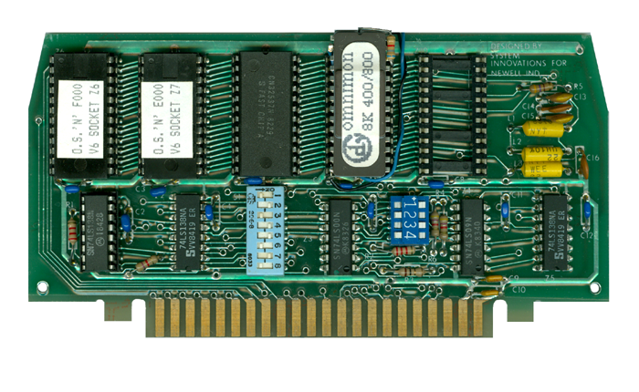
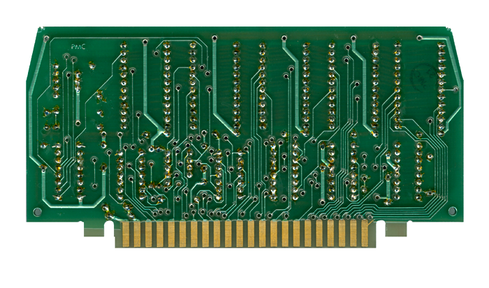

|


Newell RAMROD OS Board Manual
OS "N"
ROMs
CDY Omnimon 8K 400/800 ROM
CDY Omniview 400/800 ROM
CDY Omniview Manual
RDOS 800 V0.1 ROM
|

Newell
RAMROD Board - Front

Newell
RAMROD Board - Back
| The
Newell RAMROD OS board opened Atari 400/800
computers to a whole new world of
possibilities. Its sockets allowed for
any combination of ROM or EPROM to be to
installed with a mix of match of Atari OS
and 3rd party OS ROM's. Newell had own
enhanced OS called OS "N" which provided
additional features above Atari's standard
OS A & B versions. The RAMROD also
allowed up to 4k of static RAM to be added,
which was located in the unused space above
the OS in the memory map, so that Atari
400/800's could have 52k of usable RAM.
Also
installable on the RAMROD was David Young's
famous OMNIMON Monitor program and OMNIVIEW
80 column mode enhancement ROMs.
Another
super powerful enhancement not widely known
about was RDOS (short for ROM DOS) which
allowed the Atari 800 to boot with a boot
disk (or even the disk drive turned on at
power up) and DOS would load into memory
from the OS board.
RDOS 0.01
Info:
-
RDOS would evolve
into the ever popular MYDOS.
-
RDOS (ROM DOS)
Version 0.1
-
ROMDOS / RDOS, by Wordmark Systems
-
Equivalent to MYDOS 3.0
-
Installs into the 4K byte block of
memory at $C000.
-
For Newell RAMROD OS board or CDY
Omnimon board
-
Also known as OMNIDOS, by CDY Consulting
/ Wordmark Systems
|
Content to
be added, updated 3/23/2019 |